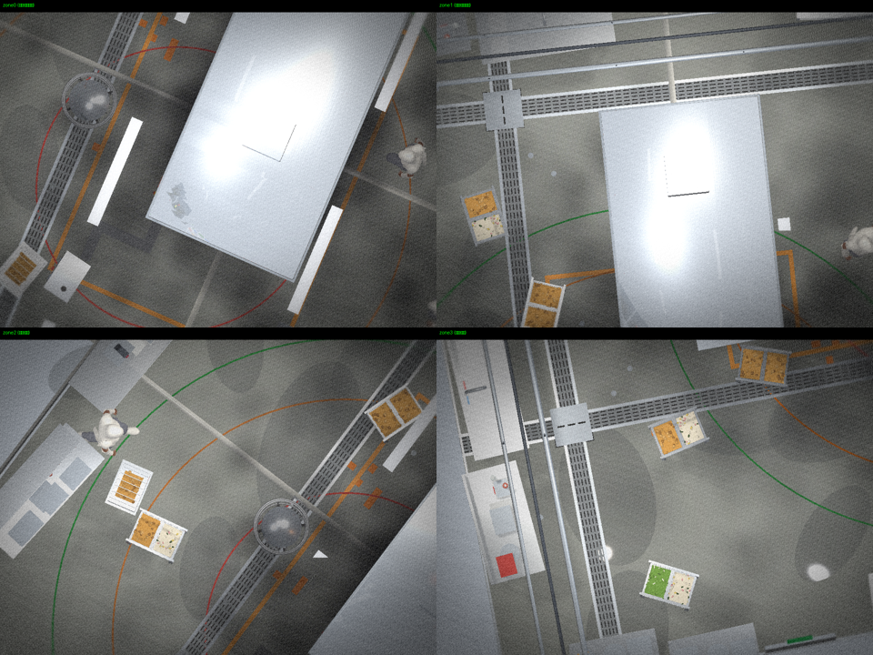
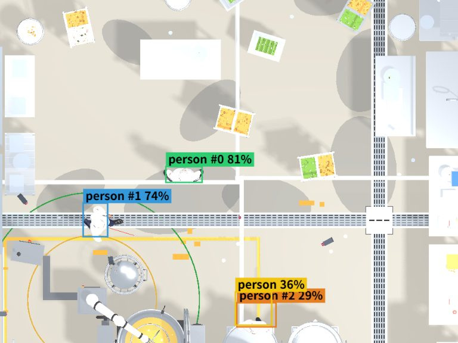
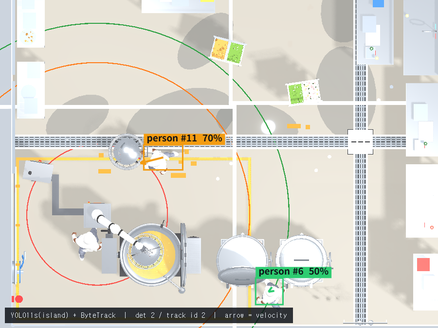
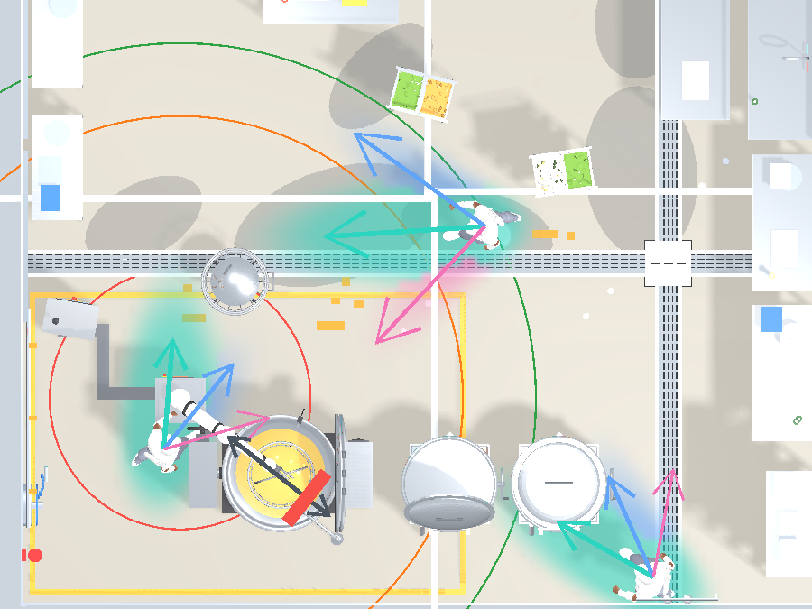
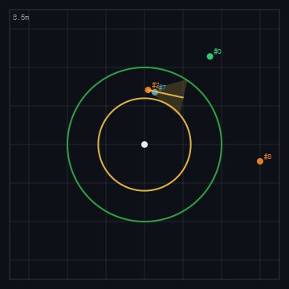

Overhead cameras → per-person future paths → a stop/slow decision before anyone enters the danger zone.





Fraction of people that are actually detectable at each ring around the robot.
4 cameras leave a hole in the outer rings. When people cluster to one side of the cell, a 4-camera layout can detect only 78% at the slow ring and 60% at the approach ring — exactly the people a predictive stop must catch. Six cameras cover every ring (≥98%). Measured over 24 seeds / 6,630 samples (geometric coverage).
Share of people entering the stop ring (3.1 m) whose entry is predicted in time.
Straight-line prediction misses curved approaches. Constant-velocity (CV) predicts only 57% of dangerous entries — it misses 48 people who curve into the robot. The learned models predict 93%, missing only 8. A missed entry is a potential collision, so recall is the safety-critical metric; the extra false alarms (lower precision) are the accepted trade. 4-camera config, robot at origin.